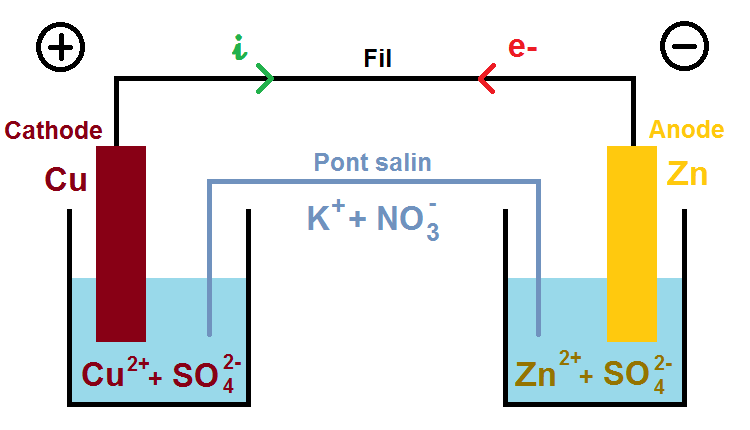
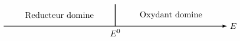
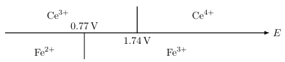
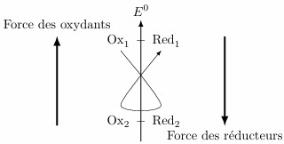

Les transformations chimiques en solution aqueuse jouent un rôle essentiel en chimie, en
biochimie et dans les processus environnementaux. Un nombre considérable de développements
technologiques (générateurs électrochimiques, lutte contre la corrosion, traitement des
eaux, méthodes d’analyse…) reposent sur des phénomènes d’oxydo–réduction en solution
aqueuse.
Oxydants et réducteurs
Définitions et demi-équation électronique
Définition :
Un réducteur est une espèce atomique, moléculaire ou ionique, susceptible de céder un
ou plusieurs électrons.
Un oxydant est une espèce susceptible de capter un ou plusieurs électrons.
À tout oxydant (noté \(\rm{Ox}\)) correspond un réducteur noté (\(\rm{Red}\)) pour lesquels
on peut écrire la demi équation électronique :
$$
\quad \mathrm{Ox} + n\mathrm{e^-} \rightarrow \mathrm{Red}
$$
Le gain d’électron par l’oxydant est appelé réduction, c’est la réaction en sens
direct, l’oxydant est réduit.
La perte d’électron par le réducteur est appelée oxydation, c’est la réaction dans le
sens indirect, le réducteur est oxydé.
On forme ainsi un couple rédox noté : \(\rm{Ox}/\rm{Red}\).
Remarques :
La demi-équation électronique rédox n’est pas un équilibre chimique, les électrons
n’existent pas en solution. On utilisera donc le symbole \(=\) ou \(\rightarrow\) mais
surtout pas \(\rightleftharpoons\).
Pour se souvenir des termes, on peut remarquer que la réduction consiste à gagner des
électrons, qui sont représentés par des charges négatives. La réduction correspond donc
au gain de moins, ce qui est bien une réduction.
Pour ajuster une demi-équation électronique, on suit l’ordre suivant :
équilibre des atomes (hors oxygène et hydrogène)
équilibre de l’oxygène avec des molécules d’eau \(\rm{H_2O}\)
équilibre de l’hydrogène avec des ions \(\rm{H^+}\)
équilibre de la charge avec des électrons \(\rm{e^-}\)
Exemples :
On veut écrire la demi-équation électronique du couple \(\rm{{IO_3}^-}/\rm{I_2}\).
Première étape : équilibre de l’iode
$$
\quad 2\mathrm{{IO_3}^-} - \mathrm{I_2}
$$
Deuxième étape : équilibre de l’oxygène
$$
\quad 2\mathrm{{IO_3}^-} - \mathrm{I_2} + 6\mathrm{H_2O}
$$
Troisième étape : équilibre de l’hydrogène
$$
\quad 2\mathrm{{IO_3}^-} + 12\mathrm{H^+} - \mathrm{I_2} + 6\mathrm{H_2O}
$$
Quatrième étape : équilibre de la charge
$$
\quad 2\mathrm{{IO_3}^-} + 12\mathrm{H^+} + 10\mathrm{e^-} \rightarrow
\mathrm{I_2} + 6\mathrm{H_2O}
$$
Les réactions d’oxydoréduction
Si l’on introduit une lame de zinc dans une solution de sulfate de cuivre (\(\rm{Cu^{2+}} +
\rm{{SO_4}^{2-}}\)), on observe un dépôt de cuivre sur la lame de zinc. Après un temps très
long, la solution se décolore. Le test à la soude permet de mettre en évidence la présence
de \(\rm{Zn^{2+}}\).
Dans l’expérience, on a mis en évidence la réaction
$$
\quad \mathrm{{Cu^{2+}}_{(aq)}} + \mathrm{Zn_{(s)}} \rightarrow
\mathrm{Cu_{(s)}} + \mathrm{{Zn^{2+}}_{(aq)}}
$$
Il y a eu transfert d’électrons entre le zinc et le cuivre. Le cuivre \(\rm{Cu^{2+}}\) est
ici réduit. L’électron n’existe pas seul en solution, il est donc échangé entre deux couples
rédox.
Définition :
Une réaction d’oxydoréduction (ou rédox) correspond à la réaction entre un oxydant et
un réducteur. Au cours de cette réaction, il y échange d’électrons entre les deux
couples, bien que ceux-ci n’apparaissent pas dans l’équation bilan.
Parmi les réactifs, on dit que l’oxydant réactif est réduit par le réducteur réactif, ou de
façon similaire, le réducteur réactif est oxydé par l’oxydant réactif.
Pour équilibrer les réactions rédox, on écrit les deux demi-équations électroniques, on les
multiplie pour avoir le même nombre d’électrons échangés puis on les ajoute pour obtenir
l’équation bilan.
Exemples :
Prenons la réaction entre \(\rm{{{Cr_2O_7}^{2-}}_{(aq)}}/\rm{{Cr^{3+}}_{(aq)}}\) et
\(\rm{{I_2}_{(aq)}}/\rm{{I^-}_{(aq)}}\).
On a les demi-équations électroniques :
$$
\quad \mathrm{{Cr_2O_7}^{2-}} + 14\mathrm{H^+} + 6\mathrm{e^-} \rightarrow
2\mathrm{Cr^{3+}} + 7\mathrm{H_2O}
$$
et
$$
\quad \mathrm{I_2} + 2\mathrm{e^-} \rightarrow 2\mathrm{I^-}
$$
Il y a en tout 6 électrons échangés et la réaction finale est :
$$
\quad \mathrm{{Cr_2O_7}^{2-}} + 14\mathrm{H^+} + 6\mathrm{I^-} \rightleftharpoons
2\mathrm{Cr^{3+}} + 7\mathrm{H_2O} + 3\mathrm{I_2}
$$
Le nombre d’oxydation
Définition :
Le nombre d’oxydation est un nombre algébrique qui caractérise l’état d’oxydation d’un
élément dans un édifice polyatomique (molécule, ion, …). Le nombre d’oxydation est noté en
chiffres romains.
Cette notion est avant tout conventionnelle, et il ne faut pas la confondre avec la charge
réelle de l’élément. Elle correspond à peu près à la charge électrique portée par chaque
élément en plus (ou en moins) de la charge de ses électrons de valence.
De façon simplifiée, on peut constater que les éléments les plus électronégatifs (comme
l’oxygène) attirent proche d’eux les électrons de la liaison chimique. Ainsi, dans
\(\rm{H_2O}\), les électrons des liaisons sont en moyenne plus proche de l’oxygène
que des hydrogènes.
L’oxygène étant assez électronégatif, en règle général il attire les deux électrons des
liaisons covalentes à lui. Inversement, l’hydrogène étant très peu électronégatif, les
électrons sont situés plus proche de l’autre élément de la liaison.
Règles de calcul
On utilisera les règles suivantes pour calculer le nombre d’oxydation :
le nombre d’oxydation d’un élément seul est égal à la charge de cet élément
pour les molécules ne contenant qu’un seul élément chimique, le nombre d’oxydation de
l’élément est nul
dans un édifice polyatomique (ion ou molécule), on a :
par conservation de la charge, la somme des nombres d’oxydation des éléments
composant une molécule est égale à la charge globale de la molécule
en règle générale, les éléments identiques dans un même édifice ont le même nombre
d’oxydation
en règle générale, dans les molécules et ions complexes, on retiendra que n.o.
(\(\rm{H}\)) = +I
en règle générale, dans les molécules et ions complexes, on retiendra que n.o.
(\(\rm{O}\)) = -II sauf si cela met en défaut les règles précédentes
Propriété :
Dans un couple rédox d’un élément donné, le nombre d’oxydation de l’oxydant de cet élément
dans l’édifice est toujours plus élevé que dans celui du réducteur.
Le nombre d’oxydation permet de distinguer plusieurs formes d’une même espèce, ainsi l’ion
fer II est l’ion \(\rm{Fe^{2+}}\) et l’ion fer III est l’ion \(\rm{Fe^{3+}}\).
Interprétation
Pour bien comprendre la signification du nombre d’oxydation, regardons la réaction
$$
\quad \mathrm{{Cu^{2+}}_{(aq)}} + \mathrm{Zn_{(s)}} \rightleftharpoons
\mathrm{Cu_{(s)}} + \mathrm{{Zn^{2+}}_{(aq)}}
$$
Deux électrons sont échangés lors de cette réaction. Le cuivre a gagné deux électrons alors
que le zinc en a perdu deux.
$$
\quad \underbrace{\mathrm{{Cu^{2+}}_{(aq)}}}_{+II} + \underbrace{\mathrm{Zn_{(s)}}}_0
\rightleftharpoons
\underbrace{\mathrm{Cu_{(s)}}}_0 + \underbrace{\mathrm{{Zn^{2+}}_{(aq)}}}_{+II}
$$
On constate que le nombre d’oxydation du cuivre a diminué de deux alors que le nombre
d’oxydation du zinc a augmenté de deux. Or lors de cette réaction, deux électrons ont été
échangés.
Propriété :
La variation du nombre d’oxydation lors d’une réaction d’oxydoréduction correspond au
nombre d’électrons échangés lors de cette réaction.
Exemple :
Regardons les variations des nombres d’oxydation de \(\mathrm{Cr}\) et de \(\mathrm{Fe}\)
lors de la réaction suivante :
$$
\quad \underbrace{2\mathrm{Cr}^{3+}}_{2 \times (+III)}
+ \underbrace{6\mathrm{Fe}^{3+}}_{6 \times (+III)} + 7\mathrm{H_2O}
\rightleftharpoons
\underbrace{6\mathrm{Fe}^{2+}}_{6 \times (+II)} +
\underbrace{\mathrm{Cr_2O_2}^{2-}}_{2 \times (+VI)} + 14\mathrm{H^+}
$$
Le nombre d’oxydation total du chrome est passé de +VI à +XII soit une variation de +6 et le
nombre d’oxydation total du fer est passé de +XVIII à +XII soit une variation de −6. Il y a
donc 6 électrons échangés. On peut vérifier que les nombres d’oxydation de \(\rm{H}\) et
\(\rm{O}\) n’ont pas changés.
Les couples de l’eau
L’eau étant le solvant de toutes les réactions que nous allons étudier, son étude
particulière est importante. L’eau est en effet présente dans deux couples rédox.
\(\mathrm{O}\) est de n.o. = -II, il peut être oxydé en \(\mathrm{O_2}\) de n.o. = 0. Donc
l’eau peut être oxydée en \(\mathrm{O_2}\) (ou \(\mathrm{O_2}\) réduit en \(\mathrm{H_2O}\))
$$
\quad \mathrm{O} + 4\mathrm{H^+} + 4\mathrm{e^+} \rightarrow 2\mathrm{H_2O}
$$
Dans le couple \(\mathrm{O_2}/\mathrm{H_2O}\), l’eau est le réducteur.
\(\mathrm{H}\) est de n.o. = +I, il peut être réduit en \(\mathrm{H_2}\) de n.o. = 0. Donc
l’eau peut être réduite en \(\mathrm{H_2}\)
$$
\quad \mathrm{H_2O} + 2\mathrm{H^+} + 2\mathrm{e^+}
\rightarrow \mathrm{H_2} + \mathrm{H_2O} \Leftrightarrow
2\mathrm{H^+} + 2\mathrm{e^+} \rightarrow \mathrm{H_2}
$$
Dans le couple \(\mathrm{H^+}/\mathrm{H_2}\), l’eau, par intermédiaire de l’ion
\(\mathrm{H_3O^+}\) contenu naturellement dans l’eau et dont l’oxygène a le même nombre
d’oxydation que dans \(\mathrm{H_2O}\), est l’oxydant.
Présentation des piles
Exemple de la pile Daniell
Prenons deux plaques métalliques, l’une constituée de \(\mathrm{Cu}\) plongeant dans une
solution contenant des ions \(\mathrm{Cu}^{2+}\) et l'autre de \(\mathrm{Zn}\) plongeant
dans une solution contenant des ions \(\mathrm{Zn}^{2+}\). Les deux plaques métalliques sont
reliées à travers une résistance et un ampèremètre.
Au départ, l’ampèremètre n’indique aucun courant. Les deux béchers sont ensuite reliés par
un pont salin, c’est-à-dire une solution ionique. L’ampèremètre indique alors un
courant.
À l’aide d’un voltmètre, on constate que le potentiel électrique est plus élevé sur la
plaque de cuivre.
Dans chacun des béchers, les deux demi-équations électroniques sont
$$
\quad {\mathrm{Cu}^{2+}}_{(aq)} + 2\mathrm{e}^- \rightarrow \mathrm{Cu}_{(s)}
$$
et
$$
\quad {\mathrm{Zn}^{2+}}_{(aq)} + 2\mathrm{e}^- \rightarrow \mathrm{Zn}_{(s)}
$$
Les deux solutions ne sont pas en contact, la réaction entre les deux couples ne peut pas
avoir lieu.
En reliant à travers une résistance les deux plaques et en reliant les deux solutions à
travers un pont salin, on autorise un déplacement des charges électriques, à savoir des
électrons dans le fil et des ions dans le pont. Ainsi, il y a échange d’électron entre les
deux plaques et la relation
$$
\quad {\mathrm{Cu}^{2+}}_{(aq)} + \mathrm{Zn}_{(s)}
\rightarrow \mathrm{Cu}_{(s)} + {\mathrm{Zn}^{2+}}_{(aq)}
$$
correspond à l’équation chimique de la pile. Ce déplacement d’électron correspond au courant
mesuré par l’ampèremètre, on a construit un générateur de courant électrique, c’est-à-dire
une pile.
Remarque :
Il faut que chaque bécher reste électriquement neutre. Donc tant que le pont salin ne ferme
par le circuit, les électrons ne peuvent pas se déplacer. Dans le pont salin, ce sont des
ions qui se déplacent pour fermer le circuit électrique.
Le fait que ce soit cette réaction chimique est non l’inverse est, pour le moment, une
constatation expérimentale.
Schéma de principe d’une pile
Définition :
On appelle demi-pile un ensemble constitué par les deux espèces Ox et Red d’un couple
redox soit un électrolyte en contact avec un conducteur, appelé électrode.
L’équation chimique de la pile est l’équation chimique d’oxydo-réduction entre les
deux couples.
Une pile est donc l’association de deux demi-piles lorsque les électrodes sont reliées entre
elles par un pont salin.
Définition :
L’électrode où a lieu la réduction est la cathode. L’électrode où a lieu l’oxydation
est l’anode.
Les électrons se déplacent de l’anode à la cathode. Le courant se déplace dans le sens
inverse des électrons.
Par ailleurs, les électrons vont du potentiel électrique le plus faible vers le plus élevé.
Ainsi, la cathode correspond au pôle + de la pile et l’anode au pôle-.

Schéma de la pile Daniell
Propriété :
Schématiquement, la pile Daniell se note
$$
\quad {}^{\ominus}\mathrm{Zn}|\mathrm{Zn}^{2+}||\mathrm{Cu}^{2+}|\mathrm{Cu}^{\oplus}
$$
D’abord l’anode, avec le métal de l’électrode puis l’électrolyte (le contenu de la
solution), un double trait pour le pont salin puis, l’électrolyte de la cathode et le métal
de son électrode.
Capacité d’une pile
Définition :
On appelle \(\mathcal{F}\) la constante de Faraday valant \(\mathcal{F}=\mathcal{N}_A
\times \mathrm{e} \approx 96500\,\mathrm{C/mol}\).
Elle représente le nombre de charges électriques dans une mole d’électron.
Définition :
Considérons une pile décrite par une équation rédox faisant intervenir un échange de \(n\)
électrons. On note \(\xi_f\) l’avancement (en mole) final de la réaction chimique. Cette
pile peut délivrer le courant électrique \(i\) pendant le temps \(\Delta t\) On note la
capacité de la pile \(Q\) telle que :
$$
\quad \boxed{ Q = i \Delta t = n \xi_f \mathcal{F} }
$$
C’est la quantité électricité, en Coulomb, disponible dans la pile.
Potentiel d’électrode
Chaque demi-pile est constituée d’une électrode. Le potentiel électrique de chaque
électrode est important, car il détermine la tension aux bornes de la pile.
Électrode standard à hydrogène
On rappelle qu’il n’est possible de mesurer qu’une différence de potentiel. Or on aimerait
pouvoir travailler uniquement avec le potentiel, pour que chaque demi-pile soit calibrée
indépendamment des autres. Pour cela, les chimistes ont décidés de considérer une demi-pile
dont le potentiel serait pris, par convention, égal à 0. Cette demi-pile est nommée
électrode standard à hydrogène (ESH).
Il s’agit d’une solution de pH = 0 dans laquelle on fait buller du \(\mathrm{H_2}\) gazeux
à la pression de 1 bar. On fait tremper dans cette solution une électrode de platine
et l’ensemble est considéré à \(T = 298\,\mathrm{K}\). Le potentiel de l’ESH est le
potentiel de l’électrode de platine. Par convention, le potentiel de l’ESH vaut
0 V.
Plus précisément, le potentiel de l’électrode, qui est le même que le potentiel de la
solution, vaut 0 V. Ainsi, si on branche une autre demi-pile avec l’ESH, la tension
mesurée avec un voltmètre sera \(u = E_D −E_{ESH} = E_D\), soit le potentiel absolu de la
demi-pile rajoutée.
La formule de Nernst
On considère un couple Ox/Red. La demi-équation électronique est
$$
\quad \alpha\mathrm{Ox} + \gamma\mathrm{H}^+ + n \mathrm{e}^- \rightarrow
\beta \mathrm{Red} + \delta\mathrm{H_2O}
$$
Ox et Red peuvent représenter plusieurs espèces chimiques présentes. Cette notation sert à
distinguer les constituants à gauche ou à droite de la flèche.
Le potentiel électrique en solution du couple Ox/Red est donnée par la formule de
Nernst :
$$
\quad E(Ox/Red) = E^0(Ox/Red,T) + \frac{RT}{n\mathcal{F}}
\ln\left( \frac{a(Ox)^{\alpha}[\mathrm{H}^+]^{\gamma}}{a(Red)^{\beta}} \right)
$$
où :
\(E\) est le potentiel et s’exprime en volts
\(E^0\) est le potentiel standard du couple Ox/Red à la température \(T\), \(E^0\) ne
dépend que de la température et du couple Ox/Red considéré
\(R\) est la constante des gaz parfaits \(8,314\,\rm{JK^{−1}mol^{−1}}\)
\(T\) est la température
\(n\) est le nombre d’électrons de la demi-équation électronique
\(\mathcal{F}\) est la constante de Faraday
les coefficients \(a\) sont les différentes activités des constituants
On utilise rarement la formule précédente mais souvent une formule approchée. En effet, à
298 K, on a \(\frac{RT}{n\mathcal{F}}\ln(10) \approx 0,06\,\rm{V}\).
Le potentiel électrique d’une demi-pile est donné par la formule de Nernst approchée à
298 K :
$$
\quad \boxed{ E(Ox/Red) = E^0(Ox/Red) + \frac{0,06}{n}
\log\left( \frac{a(Ox)^{\alpha}[\mathrm{H}^+]^{\gamma}}{a(Red)^{\beta}} \right) }
$$
Potentiels d’une pile
On reprend l’exemple de la pile Daniell.
Dans un compartiment (A), on a une solution de \(\mathrm{Cu^{2+}}\) à la concentration
\(c_1=[\mathrm{Cu^{2+}}]_0\). On plonge dans cette solution un fil de cuivre (électrode de
mesure). On note \(E_A\) son potentiel.
Dans l’autre compartiment (B), on a une solution de \(\mathrm{Zn^{2+}}\) à la concentration
\(c_1=[\mathrm{Zn^{2+}}]_0\). On plonge dans cette solution un fil de zinc (électrode de
mesure). On note \(E_B\) son potentiel.
On branche une résistance et un interrupteur sur la pile et à t = 0, on ferme
l’interrupteur.
On note \(u_{AB}\) la tension électrique entre les deux électrodes. On a \(u_{AB}=E_A-E_B\).
Tant que l’interrupteur est ouvert (\(t \lt 0\)) :
$$
\quad u_{AB} = E^0(\mathrm{Cu^{2+}}/\mathrm{Cu}) + 0,03 \log(c_1)
- \left( E^0(\mathrm{Zn^{2+}}/\mathrm{Zn}) + 0,03 \log(c_1) \right)
= 1,102\,\mathrm{V} \gt 0
$$
La polarité de la pile trouvée expérimentalement au paragraphe précédent trouve son
explication dans la valeur du potentiel de chaque électrode donnée par la formule de Nernst.
La polarité des piles se déduit en calculant le potentiel d’électrode de chaque demi-pile à
l’aide de la formule de Nernst. La borne + correspond au potentiel le plus élevé.
On appelle force électromotrice d’une pile la différence entre les potentiels des
deux électrodes. C’est la tension mesurée à vide aux bornes de la pile.
Lorsque tous les électrons pouvant potentiellement être en mouvement ont pu traverser la
pile, ils ne se mettent plus en mouvement. Cela implique que les deux électrodes ont le même
potentiel électrique.
Lorsque la pile est déchargée , la différence de potentiel entre ses deux bornes est
nulle . La réaction chimique a atteint son équilibre.
Les réactions d’oxydo-réduction
Diagramme de prédominance
Considérons une démi-équation électronique \(\mathrm{Ox} + n\mathrm{e^-} \rightarrow
\mathrm{Red}\). La formule de Nernst donne alors :
$$
\quad E(Ox/Red) = E^0(Ox/Red) + \frac{0,06}{n} \log\left( \frac{a(Ox)}{a(Red)} \right)
$$
Ainsi, si \(E \gt E^0\), on a \(a(Ox) \gt a(Red)\) et donc l’oxydant domine sur le
réducteur. Inversement, si \(E \lt E^0\), le réducteur domine.
On peut définir, en solution aqueuse, le diagramme de prédominance d’un couple rédox
en fonction du potentiel de la solution.

En particulier, pour \(E = E^0\), on a égalité des activités.
Aspect qualitatif : le sens de réaction
Considérons les couples rédox \(\mathrm{Fe^{3+}}/\mathrm{Fe^{2+}}\) et
\(\mathrm{Ce^{4+}}/\mathrm{Ce^{3+}}\). Les diagrammes de prédominance de ces deux couples
sont représentés ci-dessous :

On remarque que les ions \(\mathrm{Ce^{4+}}\) et \(\mathrm{Fe^{2+}}\) ne peuvent pas
coexister au même potentiel. Ainsi, si on les met en contact, ils vont réagir selon la
réaction :
$$
\quad \mathrm{Fe^{2+}} + \mathrm{Ce^{4+}} \rightarrow \mathrm{Ce^{3+}} + \mathrm{Fe^{3+}}
$$
Propriété :
Au cours d’une réaction rédox, l’oxydant le plus fort (de potentiel standard le plus élevé)
réagit avec le réducteur le plus fort (de potentiel standard le plus faible).
Cette règle se schématise avec la règle du gamma :
$$
\quad \mathrm{Ox_1} + \mathrm{Red_2} \rightarrow \mathrm{Red_1} + \mathrm{Ox_2}
$$

La règle du gamma pour prévoir les réactions rédox.
Aspect quantitatif : les constantes d’équilibres
Reprenons les deux couples précédents : \(\mathrm{Fe^{3+}}/\mathrm{Fe^{2+}}\) de
potentiel standard \(E^0_1 = 0,77\,\rm{V}\) et \(\mathrm{Ce^{4+}}/\mathrm{Ce^{3+}}\) de
potentiel standard \(E^0_2 = 1,74\,\rm{V}\).
Réalisons une pile avec ces deux espèces et considérons deux électrodes mesurant le
potentiel électrique de chacune des espèces plongées dans deux solutions différentes. On
a :
$$
\quad E_1 = E^0_1 + 0,06 \log \frac{[\mathrm{Fe^{3+}}]}{[\mathrm{Fe^{2+}}]}
$$
et
$$
\quad E_2 = E^0_2 + 0,06 \log \frac{[\mathrm{Ce^{4+}}]}{[\mathrm{Ce^{3+}}]}
$$
La tension aux bornes de cette pile vaut la différence entre le potentiel du Césium et celui
du Fer, car le potentiel le plus élevé étant situé au niveau de l’électrode de l’oxydant le
plus fort (où à lieu la réduction, soit la cathode). Il vient :
$$
\quad U = (E^0_1 - E^0_2) + 0,06 \log
\frac{[\mathrm{Fe^{3+}}][\mathrm{Ce^{3+}}]}{[\mathrm{Fe^{2+}}][\mathrm{Ce^{4+}}]}
$$
On reconnait l’inverse du quotient de réaction dans le logarithme soit :
$$
\quad U = (E^0_1 - E^0_2) + 0,06 \log \frac{1}{Q_r}
$$
À l’équilibre chimique, la pile ne débite plus, on a \(U = 0\) et aucun courant ne circule.
Dans ce cas, \(Q_r = K\) la constante d’équilibre de la réaction.
Dans l’exemple, on a :
$$
\quad K = \frac{[\mathrm{Fe^{3+}}]_{eq}[\mathrm{Ce^{3+}}]_{eq}}
{[\mathrm{Fe^{2+}}]_{eq}[\mathrm{Ce^{4+}}]_{eq}}
= 10^{(E^0_1 - E^0_2)/0,06}
$$
Si la réaction rédox a lieu selon la règle du gamma, alors \(K \gt 1\). Par ailleurs, si
\(K \gt 10^3\), la réaction peut être considérée comme totale. On remarque que cette
propriété est vérifiée pour des potentiels redox très différents. Si ce n’est pas le cas, il
faut étudier l’équilibre chimique.
Propriété :
Si l’écart entre les potentiels redox est supérieur à 0,2 V, alors la réaction peut
être considérée comme totale.
Méthode
Méthode pour étudier les exercices d’oxydoréduction :
Identifier les couples rédox présents et écrire leurs demi-équations.
Réaliser une règle du gamma pour prévoir le sens de la réaction.
Écrire la réaction d’oxydo-réduction liée à ce sens de réaction.
En déduire la constante d’équilibre de la réaction globale puis répondre aux
questions.